품질경영기사 (2019-03-03 기출문제)
1과목: 실험계획법
1. 반복 없는 5×5 라틴방격법에 의하여 실험을 행하고, 분산분석한 후 A2B4C3 조합에 대한 모평균의 구간추정을 하기 위한 유효반복수는 얼마인가?
- 16/15
- 19/17
- 35/20
- 25/13
(정답률: 81%)

2. 망소특성을 갖는 제품에 대한 SN비 식으로 맞는 것은? (단, yi는 품질특성의 측정값, n은 샘플의 크기,
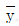
는 샘플평균, s는 샘플표준편차이다.)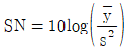
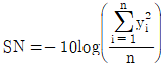
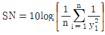
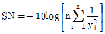
(정답률: 86%)
3. 3개의 공정라인(A1, A2, A3)에서 나오는 제품의 부적함품률이 동일한지 검토하기 위하여 샘플링 검사를 하였다. 작업시간(B)별로 차이가 있는지도 알아보기 위하여 오전, 오후, 야간 근무조에서 공정라인별로 각각 100개씩 조사하여 다음과 같은 데이터를 얻었다. 이 때 ST는 약 얼마인가? (단, 단위는 100개 중 부적합품수이다.)
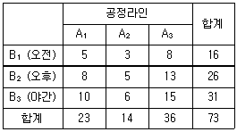
- 64.238
- 67.079
- 124.889
- 711.079
(정답률: 72%)
4. L27(313)형 직교배열표에서 기본표시가 ab2으로 나타나는 열에 A 요인, ab2c2으로 나타나는 열에 C요인을 배치하였을 떄 A와 C의 교호작용이 나타나는 열의 기본표시는?
- ab2과 bc
- ab와 bc
- ab2c와 c
- abc와 bc
(정답률: 79%)
5. 실험횟수를 늘리지 않고 실험전체를 몇 개의 블록으로 나누어 배치시켜 동일한 환경에서 적은 실험횟수로 실험의 정도를 향상시키기 위하여 고안한 실험계획법은?
- 교락법
- 라틴방격법
- 난괴법
- 요인배치법
(정답률: 64%)
6. 요인 A, B, C를 택하여 3회 반복의 지분실험을 하였을 때 , 요인 C(AB)의 자유도(VC(AB))와 자유도(Ve)는 각각 얼마인가? (단, 요인 A, B, C는 각각 4수준, 3수준, 2수준이며, 모두 변량요인이다.)
- VC(AB)=12, Ve=24
- VC(AB)=12, Ve=48
- VC(AB)=24, Ve=12
- VC(AB)=24, Ve=48
(정답률: 80%)
7. 반복 없는 3요인 실험(3요인 모두 모수)에서 l=3, m=3, n=2일 때 VA×C값은?
- 2
- 4
- 5
- 6
(정답률: 68%)
8. 다음의 표는 반복이 2회인 22형 요인실험이다. 요인 A와 B의 상호작용의 효과는?
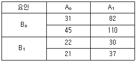
- -23
- -12
- 10
- 28
(정답률: 79%)
9. 실험계획의 기본원리 중에서 실험의 환경이 될 수 있는 한 균일한 부분으로 나누어 신뢰도를 높이는 원리는?
- 반복의 원리
- 랜덤화의 원리
- 직교화의 원리
- 블록화의 원리
(정답률: 75%)
10. 완전 확률화 계획법(Completely randomized design)의 장점이 아닌 것은?
- 처리별 반복수가 다를 경우에도 통계분석이 용이하다.
- 처리(treatment)수나 반복(replication)수에 제한이 없어 적용범위가 넓다.
- 실험재료(experimental material)가 이질적(nonhomogeneous)인 경우에도 효과적이다.
- 일반적으로 다른 실험계획보다 오차 제곱함(error sum of square)에 대응하는 자유도가 크다.
(정답률: 64%)
11. 실험의 관리상태를 알아보는 방법으로 오차의 등분산 가정에 관한 검초방법에 속하지 않는 것은?
- Hartley의 방법
- Bartlett의 방법
- Satterthwaite의 방법
- R 관리도에 의한 방법
(정답률: 58%)
12. 모수요인을 갖는 1요인 실험에서 수준 1에서는 6번, 수준 2에서는 5번, 수준 3에서는 4번의 반복을 통해 특성치를 수집하였다. μ1-μ2의 95% 양측 신뢰구간 식은?
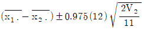
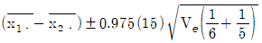
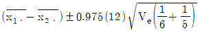
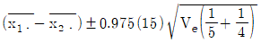
(정답률: 68%)
13. 모수요인 A와 변향요인 B의 수준이 각각 과 이고, 반복수가 일 경우의 모형은 다음과 같다. 분산분석을 통해 A 요인의 수준 간 차이가 있는지를 검정하고자 한다. 이를 위해 F 분포를 이용하고자 하는 경우, 분모의 자유도는 얼마인가?
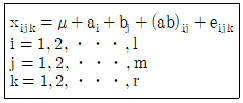
- lmr-1
- lm(r-1)
- l(m-1)
- (l-1)(m-1)
(정답률: 50%)
14. n개의 측정치 y1, y2, ㆍㆍㆍ, yn의 정수계수(定數係數) c1, c2, ㆍㆍㆍ, cn의 일차식 L=c1y1+c2y2+ㆍㆍㆍ+cnyn을 무엇이라 하는가?
- 직교
- 단위수
- 정규방정식
- 선형식
(정답률: 67%)
15. 벼 품종 A1, A2, A3,의 단위당 수햑량을 비교하기 위하여 2개의 블록으로 층별하여 난괴법 실험을 하였다. 각 품종별 단위당 수확량이 다음과 같은 때 블록별(B) 제곱할 SB는 약 얼마인가?
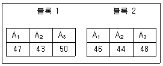
- 0.67
- 0.89
- 0.97
- 1.23
(정답률: 60%)
16. L16(215) 직교배열표에서 4수준 요인 A와 2수준 요인 B, C, D, F와 A×B, B×C, B×D를 배치하는 경우, 오차항의 자유도는?
- 2
- 3
- 4
- 5
(정답률: 61%)
17. 그림과 같이 변향요인 R(2수준), 모수요인 A(3수준), 모수요인 B(4수준_인 경우 해당 되는 실험계획법은?
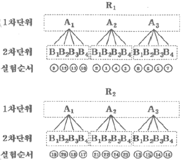
- 이단분할법
- 반복이 있는 난괴법
- 단일분할법(일차단위가 이원배치)
- 단일분할법(일차단위가 일원배치)
(정답률: 61%)
18. 반복이 없는 2요인 실험에서 A는 모수, B는 변량이다. A는 5수준, B는 4수준인 경우
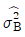
의 추정값을 구하는 식은?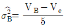
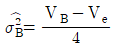
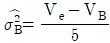
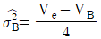
(정답률: 76%)
19. 23형 요인배치법에서 abc, a, b, c의 4개 처리 조합을 일부실시법에 의해 실험하려고 한다. 요인 B와 별명(Alias)관계에 있는 요인은?
- AB
- BC
- AC
- ABC
(정답률: 77%)
20. 회기분석에서 회귀에 의한 제곱합 SR=62.0, 총제곱함 Syy= 65.5일 때, 결정계수 r2의 값은 약 얼마인가?
- 0.461
- 0.761
- 0.841
- 0.947
(정답률: 73%)
2과목: 통계적품질관리
21. L제과회사는 10개의 대형 도매업소를 통하여 각 슈펴마켓에 제품을 판매하고 있다. L사에서는 새로 개발한 과자의 선호도를 평가하기 위해서 각 도매업소가 공급하는 슈퍼마켓들 중에서 5개씩을 선택하여 시범판매하려고 한다. 이것은 어떤 표본샘플링 방법인가?
- 2단계 샘플링
- 취락 샘플링
- 단순 랜덤 샘플링
- 층별 샘플링
(정답률: 54%)
22. 이상적인 정규분포에 있어 중앙치, 평균치, 최빈값 간의 관계는?
- 모두 같다.
- 모두 다르다.
- 평균치와 최빈값은 같고, 중앙치는 다르다.
- 평균치와 중앙치는 같고, 괴빈값은 다르다.
(정답률: 74%)
23. 어떤 제품의 부적합수가 16일 때, 모부적합수의 95% 신뢰한계는 약 얼마인가?
- 9.4~22.6개
- 8.2~23,8개
- 12.0~16.0개
- 15.2~16.8개
(정답률: 71%)
24. T제품의 개당 검사비용은 1000원이고 부적합품 혼입으로 인한 손실은 개당 1500원이다. 이 제품의 임계부적합품률은 약 얼마인가?
- 0.01
- 0.67
- 0.95
- 1.50
(정답률: 73%)
25. 계수치 샘플링검사 절차-제1부 : 로트별 합격품질한계(AQL) 지표형 샘플링 검사 방식(KS Q lSO 2859-1 : 2014)의 보통 검사에서 생산자 위험에 대한 1회 샘플링 방식에 대한 값은 100 아이템당 부적합수 검사일 경우 어떤 분포에 기초하고 있는가?
- 이항분포
- 초기하분포
- 정규분포
- 푸아송분포
(정답률: 69%)
26. 공정이 안정상태에 있는 어떤
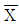
-R관리도에서 n=4,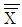
=23.50,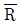
=3.09 이었다. 이 관리도의 관리한계를 연장하여 공정을 관리할 때,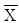
값이 20.26인 경우 어떤 행동을 취해야 하는가? (단, n=4일 때 A2=0.73 이다.)- 현재의 공정상태를 계속 유지한다.
- 관리한계에 대한 재계산이 필요하다.
- 이상원인을 규명하고 조치를 취해야 한다.
- 이 데이터를 버리고 다시 공정평균을 계산한다.
(정답률: 63%)
27. 상관에 관한 검정 결과 모상관계수 ρ≠0라는 결과가 나왔다. 이결과가 의미하는 것으로 맞는 것은?
- H0를 채택하는 것을 의미한다.
- 상관관계가 없다는 것을 의미한다.
- 상관관계가 있다는 것은 의미한다.
- 재검정이 필요하다는 것을 의미한다.
(정답률: 65%)
28. 검사특성 곡선(OC 곡선)에 대한 설명으로 틀린 것은?
- 로트의 부적합품률과 로트의 합격확률과의 관계를 나타낸 그래프이다.
- OC 곡선에 의한 샘플링 검사를 하면 나쁜 로트를 합격시키는 위험은 없다.
- OC 곡선의 기울기가 급해지면 생산자 위험이 증가하고 소비자 위험이 감소한다.
- OC 곡선에서 로트의 합격확률은 초기하 분포, 이항분포, 푸아송분포에 의하여 구할 수 있다.
(정답률: 66%)
29. 평균값 400g 이하인 로트는 될 수 있는 한 합격시키고, 평균값 420g 이상인 경우 불합격 시키려고 한다. 과거의 경험으로 표준 편차는 10g으로 조사되었다. 이때 α=0.⑤, β=0.1을 만족시키기 위해서 시료의 크기(n)를 얼마로 하는 것이 좋은가? (단, Kα=1.64, Kβ=1.28이다.)
- 2개
- 3개
- 4개
- 5개
(정답률: 44%)
30. 컴퓨터 주변기기 제조업자는 인터넷 광고 사이트에 배너광고를 하려고 계획 중이다. 이 사이트에 접속하는 사용자 1000명을 임의 주출하여 사용자 특성을 조사한 결과가 표와 강을 때, 설명으로 틀린 것은?
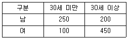
- 임의로 선택한 상용자가 30세 미만일 확률은 0.35이다.
- 임의로 선택한 사용자가 30세 이상의 남자일 확률은 0.2이다.
- 임의로 선택한 사용자가 여지이거나 적어도 30세 이상일 확률은 0.45이다.
- 임의로 선택한 사용자가 남자라는 조건하에서 30세 미만일 확률은 약 0.56 이다.
(정답률: 65%)
31. n=5인 L-S관리도에서
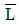
=6.443,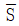
=6.417,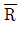
=0.0274일 때, UCL과 LCL을 구하면 약 얼마인가? (단, n=5일 때 A9=1.36이다.)- UCL=6.293, LCL=6.107
- UCL=6.460, LCL=6.193
- UCL=6.467, LCL=6.393
- UCL=6.867, LCL=6.293
(정답률: 66%)
32. 우리 회사에 부품을 납품하는 협력업체의 품질이 점점 나빠지고 있다. 이 협력업체의 품질을 조사하기 위하여 제조 공정으로부터 n=10의 샘플을 취하였더니 x=3개의 부적합품이 발견되었다. 이때 모부적합품률을 추정하기 위한
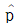
의 식은? (단, N의 로트의 크기이다.)- N-x
- N-n
- x/N
- x/n
(정답률: 74%)
33. 유의수준 α에 대한 설명으로 맞는 것은?
- 나쁜 로트(lot)가 합격할 확률이다.)
- 귀무가설이 옳은데 기각할 확률이다.
- 공정에 이상이 있는데 없다고 판정할 확률이다.
- 관리도에서 3σ 한계 대신 2σ 한계를 쓰면, a는 감소한다.
(정답률: 64%)
34. 관리도의 검출력에 대한 설명 중 틀린 것은?
- 제2종 오류의 확률이 0.2이면 검출력은 0.8이다.
- 검출력이란 공정의 이상을 발견해 낼 수 있는 확률이다.
- 검출력 곡선의 합격시키고 싶은 로트가 불합격될 확률을 나타낸다.
- 공정의 이상을 가로축에 잡고, 세로축에는 검출력을 잡은 것을 검출력 곡선이라고 한다.
(정답률: 64%)
35. 적합성 검정에서 기대도수의 설명으로 틀린 것은?
- 관측도수의 평균이 기대도수이다.
- 귀무가설을 기준으로 계산한 것이다.
- 기대도수의 전체의 합과 관측도수의 전체의 합은 같다.
- 검정 통계량 카이제곱 값은 기대도수와 관측도수로 계산한다.
(정답률: 38%)
36. A 업종에 종사하는 종업원의 임금 실태를 조사하기 n이하여 표본의 크기 120명을 조사하였더니 평균 98.87만원, 표준편차 8.56만원이었다. 이들 종업원 전체 평균임금을 유의수준 1%로 추정하면 신뢰구간은 약 얼마인가? (단, u0.99=2.33, u0.995=2.58이다.)
- 96.66만원~101.08만원
- 96.85만원~100.89만원
- 97.19만원~100.55만원
- 97.45만원-100.28만원
(정답률: 73%)
37. 원료 A와 원료 B에서 만들어지는 제품의 순도를 측정한 결과 다음과 같다. 원료 A로부터 만들어지는 제품의 분산을 σA2이라 하고, 원료 B로부터 만들어지는 제품의 분산을 σB2 이라할 때, 유의수준 0.⑤로 σA2=σB2 인가를 검정하는데 필요한 F0 의 값은 약 얼마인가?
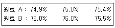
- 0.280
- 1.003
- 1.889
- 2.571
(정답률: 47%)
38. 크기 n의 시료에 대한 평균치
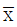
가 얻어졌다. 모평균 μ가 μ0라고 할 수 있는가를 알고싶다. 모집단의 분산이 알려져 있을 때 이용하는 분포는?- t분포
- X2분포
- F분포
- 정규분포
(정답률: 55%)
39.
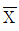
–R관리도에서 관리계수(Cf)를 계산하였더니 0.67이었다. 이 공정에 대한 판정으로 맞는 것은?- 군구분이 나쁘다.
- 군간변동이 작다.
- 군내변동이 크다.
- 대체로 관리상태이다.
(정답률: 63%)
40. 부적합률에 대한 계량형 축차 샘플링검사 방식(표준편차 기지)(KS Q ISO 8423 : 2008)에서 하한규격이 주어진 경우, ncum＜nt일 때, 합격판정치(A)를 구하는 식으로 맞는 것은? (단, hA는 합격판정선의 절편, g는 합격판정선의 기울기, nt는 누적 샘플크기의 중지값, ncum은 누적 샘플크기이다.)
- A=hA+gㆍσㆍncum
- A=-hA+gㆍσㆍncum
- A=hAㆍσ+gㆍσㆍncum
- A=-hAㆍσ+gㆍσㆍncum
(정답률: 34%)
3과목: 생산시스템
41. 예지보전에 대한 설명으로 틀린 것은?
- 과다한 보전비용의 발생을 방지할 수 있다.
- 일정한 주기에 의해 부품을 교체하는 방식이다.
- 불필요한 예방보전을 줄이면서 트러블에 대한 미연방지를 도모한다.
- 부품이 정상적으로 작동하면 교체하지 않고 지속적으로 사용하며 상태를 체크한다.
(정답률: 54%)
42. 웨스팅하우스법에 의한 작업수행도 평가에 반영되는 요소가 아닌 것은?
- 작업의 숙련도(Skill)
- 작업의 노력도(Effort)
- 작업의 난이도(Difficulty)
- 작업의 일관성(Consistency)
(정답률: 56%)
43. 애로공정의 일정계획기법으로 사용되는 OPT(Optimized Production Technology)의 설명으로 틀린 것은?
- 공정의 흐름보다는 능력을 균형화 시킨다.
- 애로공정이 시스템의 산출량과 재고를 결정한다.
- 시스템의 모든 제약을 고려하여 생산일정을 수립한다.
- 자원의 이용률(utilization)과 활성화(activation)는 다르다.
(정답률: 44%)
44. 메모동작분석(Memo-motion study)에 적함하지 않은 것은?
- 장기적 연구대상 직업
- 사이클 시간이 극히 짧은 작업
- 집단으로 수행되는 작업자의 활동
- 불규칙적인 사이클 시간을 갖는 직업
(정답률: 57%)
45. 수요예측 방법에 해당하지 않는 것은?
- 회귀분석
- 시계열분석
- 분산분석
- 점문가의견법
(정답률: 54%)
46. 부품 Y가공 작업에 대하여 1주일 3600분 동안 관측한 결과, Y가공작업의 실동률은 80%, 생산량은 576개, 작업수행도는 120%로 평가되었다. 외경법에 의한 여유율이 10%일 때, Y가공작업의 단위당 표준시간은?
- 5.6분
- 6.6분
- 7.6분
- 8.6분
(정답률: 54%)
47. 기계 M으로 다음과 같은 3가지 제품을 생산하는 작업장에서 SPT(Shortest Processing Time) 규칙으로 처리순서를 정했을 때, 평균지체시간(Average Job Tardiness)은?
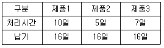
- 1일
- 2일
- 3일
- 4일
(정답률: 54%)
48. 1990년대 들어 컴퓨터 기술의 발전과 더불어 기업 전체의 경영자원을 유효하게 활용한다는 관점에서 기업 자원계획 또는 전자적 자원계획이라 하며, 협의의 의미로 통합형 업무패키지 소프트웨어라 하는 것은?
- DRP
- MRP
- ERP
- MRPII
(정답률: 71%)
49. 종속수요품의 재고관리에 MRP시스템을 적용하였을 때 기대되는 이점이 아닌 것은?
- 평균재고 감소
- 적절한 납기이행
- 설비 투자의 최대화
- 자재부족 현상의 최소화
(정답률: 62%)
50. 특정한 보전자재의 최근 6개월간 수요가 다음과 같다. 조달기간이 2개월 일 때 품절율을 5%로 하는 발주점은 약 얼마인가? (단, 품절을 5% 일 때 안전계수 α는 1.65이다.)
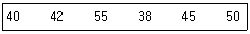
- 98개
- 1⑤개
- 113개
- 121개
(정답률: 30%)
51. 도요타생산방식(TOS)에서 제거하고자 하는 7대 낭비가 아닌 것은?
- 기능의 낭비
- 재고의 낭비
- 운반의 낭비
- 과잉생산의 낭비
(정답률: 54%)
52. 생산관리의 기본목표에 해당되지 않는 것은?
- 품질(Quality)
- 원기(Cost)
- 납기(Delivery)
- 개발(Development)
(정답률: 71%)
53. 손익분기점 분석을 이용한 제품조합의 방법 중 다른 품종의 제품 중에서 대표적인 품종을 기준품종으로 선택하고, 그 품종의 한계이익률로 손익분기점을 계산하는 방법은?
- 절충법
- 평균법
- 개별법
- 기준법
(정답률: 63%)
54. M. L. Fisher가 주장한 공급사슬의 유형으로, 재고를 최소화하고 공급사슬 내 서비스업체와 제조업체의 효율을 최대화하기 위해 제품 및 서비스의 흐름을 조정하는 데 목적을 두는 공급사슬의 명칭은 무엇인가?
- 민첩형 공급사슬(agile supply chains)
- 효율적 공급사슬(efficient supply chains)
- 반응적 공급사슬(responsive supply chains)
- 위험방지형 공급사슬(risk-hedging supply chains)
(정답률: 64%)
55. 총괄생산계획에서 수요의 변동에 대응하기 위해 활용할 수 있는 대안으로 가장 거리가 먼 것은?
- 하청생산
- 재고수준 조정
- 고용 및 해고
- 생산설비 증설
(정답률: 44%)
56. 원재료의 공급능력, 가용 노동력 그리고 기계설비의 능력 등을 고려하여 이익을 최대화하기 위한 제품별 생산비율을 결정하는 것을 무엇이라 하는가?
- 생산계획
- 공수계획
- 일정계획
- 제품조합
(정답률: 43%)
57. TPM의 목적과 가장 거리가 먼 것은?
- 안전재고 확보
- 인간의 체질개선
- 6대 로스의 제로화
- 설비의 체질개선
(정답률: 38%)
58. 자재가 공정으로 들어오는 지점 및 공정에서 행하여지는 작업기호와 검사기호만을 사용하여 공정 전체를 파악하기 위한 공정분석도표는?
- 흐름공정도표(Flow Process Chart)
- 다중활동분석(Multiple Activity Chart)
- 작업공정도표(Operation Process Chart)
- 작업자-기계도표(Man-Machine Chart)
(정답률: 51%)
59. 제품의 시장수요를 예측하여 불특정 다수 고객을 대상으로 대량생산하는 방식은?
- 계획생산
- 주문생산
- 동시생산
- 프로젝트생산
(정답률: 67%)
60. 집중구매(Centralized Purchasing)에 대한 설명으로 가장 거리가 먼 것은?
- 분산구매에 비하여 구매요구에 신속하기 대응할 수 있다.
- 분산구매에 비해서 공급자와 좋은 관계를 유지할 수 있어 좋다.
- 분산구매에 비해서 상대적으로 낮은 가격으로 구매할 수 있다.
- 분산구매에 비해서 긴급수요에 대한 대응력이 상대적으로 낮다.
(정답률: 59%)
4과목: 신뢰성관리
61. 고장해석에 관한 설명으로 틀린 것은?
- FTA는 정량적 분석방법이다.
- 고장해석 기법으로 FMEA와 FTA가 많이 활용된다.
- FMEA의 실시과정에는 고장 메커니즘에 대한 많은 정보와 지식이 필요하다.
- FMEA는 시스템의 고장을 발생시키는 사상과 그 원인과의 관계를 관문이나 사상기호를 사용하여 나뭇가지 모양의 그림으로 설명한다.
(정답률: 57%)
62. 부하의 평균(μx)이 1, 표준편차(σx)가 0.4, 재료강도의 표준편차(σy)가 0.4이고, μx와 μy로부터의 거리인 nx와 ny가 각각 2인 경우 안전계수를 1.52로 하고 싶다면, 재료의 평균강도(μy)는 약 얼마가 되어야 하는가? (단, 재료의 강도와 여기에 걸리는 부하는 정규분포를 따른다.)
- 1.25
- 2.24
- 3.⑤
- 3.54
(정답률: 52%)
63. 10개의 부품이 직렬로 연결된 어떤 시스템이 있다. 각 부품의 고장률이 0.02/시간으로 모두 같다면, 이 시스템의 평균수명(MTBF)은 몇 시간인가? (단, 부품의 고장률 함수는 지수분포를 따른다.)
- 0.2시간
- 0.5시간
- 5시간
- 50시간
(정답률: 55%)
64. 샘플 54개에 대한 수명시험결과 표와 같은 데이터를 얻었다. 구간 4~5시간에서의 고장률은 약 얼마인가?
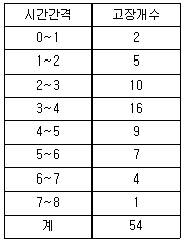
- 0.167/시간
- 0.429/시간
- 0.611/시간
- 0.750/시간
(정답률: 35%)
65. 수명분포가 지수분포인 부품 n개에 대한 수명시험 중 고장난 부품은 교체하고 미리 정한 시간 t0에서 시험을 중단하였다. 시간 t0에서의 고장개수가 총 r개 일 때, 고장률의 추정 값은?
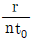
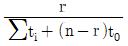
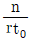
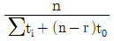
(정답률: 48%)
66. 신뢰성 시험을 실시하는 적합한 이유를 다음에서 모두 나열한 것은?
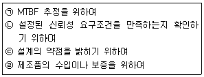
- ㉠, ㉡
- ㉠, ㉡, ㉢
- ㉡, ㉢
- ㉠, ㉡, ㉢, ㉣
(정답률: 64%)
67. 수리하면서 사용할 수 있는 기기의 신뢰도 함수는 평균고장률(λ) 0.01/시간인 지수분포에 따르며, 보전도 함수는 평균수리율(μ) 0.1/시간인 지수분포에 따른다고 할 때, 이 기기의 가용도(Availability)는 약 얼마인가?
- 0.09
- 0.10
- 0.91
- 1.00
(정답률: 66%)
68. 욕조곡선형태의 고장률 곡선에서 우발고장기에 주로 생기는 우발고장은 어떤 분포를 사용하여 예측하는가?
- 지수분포
- F 분포
- 정규분포
- 푸아송분포
(정답률: 59%)
69. 다음 시스템의 고장목(Fault tree)을 신뢰성 블록도로 가장 적절하게 표현한 것은?
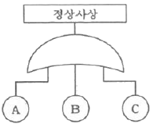
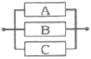
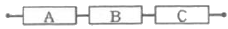
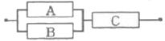
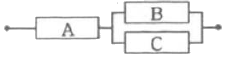
(정답률: 60%)
70. 와이블 확률지를 구성하고 있는 가로축과 세로축의 척도로서 맞는 것은? (단, X:가로축, Y:세로축이다.)
- X=lnt, Y=ln(1-F(t))
- X=lnt, Y=ln
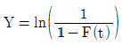
- X=lnt, Y=lnln(1-F(t))
- X=lnt, Y=lnln
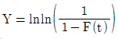
(정답률: 61%)
71. 10℃ 법칙이 적용되는 경우에, 가속온도 100℃에서 수명시험을 하고 추정한 평균수명이 1500시간이다. 만약 가속계수가 32인 경우 정상사용 조건 50℃에서의 평균수명은?
- 3000시간
- 4800시간
- 48000시간
- 60000시간
(정답률: 53%)
72. 중앙값순위(median rank)표에서 샘플수(n)가 10개, 고장순번(i)이 1일 때, 첫 번째 고장발생시간에서 불신뢰도 F(ti)는 약 얼마인가?
- 0.013
- 0.067
- 0.074
- 0.083
(정답률: 63%)
73. 신뢰도 배분에 대한 설명으로 틀린 것은?
- 신뢰도 배분은 설계 초기단계에 이루어진다.
- 신뢰도 배분은 과거 고정률 데이터가 있어야 할 수 있다.
- 시스템의 신뢰성 목표를 서브시스템으로 배분하는 것을 의미한다.
- 신뢰도 배분을 위해서는 시스템의 신뢰도 블록 다이어그램이 필요하다.
(정답률: 50%)
74. MTBF가 50000시간인 3개의 부품이 병렬로 연결된 시스템의 MTBF는 약 몇 시간인가?
- 13333.33시간
- 18333.33시간
- 47666.47시간
- 91666.67시간
(정답률: 53%)
75. 어떤 부품의 수명이 와이블분포를 따를 때 사용시간 1500시간에서의 고장률은 약 얼마인가? (단, 형상모수는 4, 척도모수는 1000, 위치모수는 1000이다.)
- 0.00045/시간
- 0.00⑤0/시간
- 0.00⑤3/시간
- 0.93940/시간
(정답률: 36%)
76. 동일한 부품으로 구성된 n 중 k시스템의 신뢰도를 표현하는데 사용되는 분포는?
- 이항분포
- 정규분포
- 기하분포
- 지수분포
(정답률: 54%)
77. 고장률 함수 λ(t)가 감소형인 경우 와이블 분포의 형상모수(m)은 어떠한가?
- m＜1
- m＞1
- m=1
- m=0
(정답률: 65%)
78. 어떤 장치의 고장 후 수리시간 t는 다음과 같은 피라미터의 값을 갖는 대수정규분포를 한다고 알려져 있다. 이 장치의 40시간에서 보전도 M(t=40)은 약 얼마인가? (단, 표준화상수 u값 계산시 소수 셋째자리 이하는 버린다.)
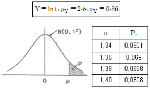
- 0.9099
- 0.9131
- 0.9162
- 0.9192
(정답률: 43%)
79. 신뢰도 R(t)와 불신뢰도 F(t)의 관계를 맞게 나타낸 것은?
- F(t)=R(t)-1
- F(t)-1-R(t)
- R(t)=F(t)-1
- R(t)=1-F(t)/2
(정답률: 65%)
80. 신뢰성 샘플링 검사에서 고장률 척도의 설명으로 맞는 것은?
- λ0=ARL, λ1=LTFD
- λ0=AQL, λ1=LTFD
- λ0=ARL, λ1=LTFR
- λ0=AQL, λ1=LTFR
(정답률: 48%)
5과목: 품질경영
81. 품질전략을 수립할 때 계획단계(전략의 형성단계)에서 SWOT 분석을 많이 활용하고 있다. 여기서 SWOT 분석 시 고려되는 항목이 아닌 것은?
- 근심(trouble)
- 약점(weakness)
- 강점(strength)
- 기회(opportunity)
(정답률: 69%)
82. 기업이 조직의 구성원들에게 품질에 관한 사고를 지니도록 유도하는 조직론적 방법 중 하나로서 동일한 직장에서 품질경영활동을 자주적으로 하는 활동은?
- 개선제안
- 품질분임조
- 방침관리
- 태스크 포스 팀
(정답률: 66%)
83. 제품의 일반목적과 구조는 유사하나, 어떤 특정한 용도에 따라 식별할 필요가 있을 경우에 쓰는 표준화 용어는?
- 형식(type)
- 등급(grade)
- 종류(class)
- 시방(spceification)
(정답률: 57%)
84. 품질비용에 대한 설명 중 틀린 것은?
- 예방비용과 평가비용이 증가하면 실패비용은 감소한다.
- 실패비용은 공장 내 문제인 내부 실패비용과 클레임 등에서 발생되는 외부 실패비용으로 구성된다.
- 일반적으로 실패비용이 크기 때문에 실패비용 감소효과가 예방비용이나 평가비용의 증가를 상쇄할 수 있다.
- 회사입장에서 총 품질비용을 최소화하는 방법은 예방비용, 평가비용 및 실패비용 사이에 적당한 타협점을 찾아야 하며, 타협점은 예방비용+평가비용=실패비용의 공식이 성립한다.
(정답률: 52%)
85. 어떤 제품의 규격이 8.500~8.550mm이고, σ=0.015일 때, 공정능력지수(Cp)는 약 얼마인가?
- 0.556
- 0.856
- 0.997
- 1.111
(정답률: 56%)
86. 두 개의 짝으로 된 데이터의 상관계수가 -0.9일 때, 설명으로 맞는 것은?
- 무상관 관계를 나타낸다.
- 양의 상관관계를 나타낸다.
- 음의 상관관계를 나타낸다.
- 어떤 관계가 있는지 알 수 없다.
(정답률: 67%)
87. 다음은 국내 아무개 그룹 회장이 펼치고 있는 내용이다. 임직원에게 무엇을 불어넣기 위한 노력의 일환인가?
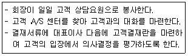
- 원가주도적 시고
- 판매자 중심적 사고
- 고객지향적 사고
- 생산자지향적 사고
(정답률: 69%)
88. 실제로 제조된 물품이 설계품질에 어느 정도 합치하고 있는가를 의미하는 완성품질은?
- 기획품질
- 시장품질
- 설계품질
- 제조품질
(정답률: 46%)
89. 제조업자가 합리적인 대체설계(代替設計)를 채용하였더라면 피해나 위험을 줄이기나 피할 수 있었음에도 대체설계를 채용하지 아니하여 해당 제조물이 안전하지 못하게 된 경우를 의미하는 것은?
- 제조물 책임
- 제조상의 결함
- 표시상의 결함
- 설계상의 결함
(정답률: 55%)
90. 6시그마에 대한 설명으로 가장 거리가 먼 것은?
- 6시그마는 DMAIC 단계로 구성되어 있다.
- 게이지 R&R은 개선(Improve) 단계에 포함된다.
- 프로세스 평균이 고정된 경우 3시그마 수준은 2700ppm이다.
- 백만개 중 부적합품수를 한자리수 이하로 낮추려는 혁신운동이다.
(정답률: 39%)
91. 품질, 원가, 수량ㆍ납기와 같이 경영 기본요소별로 전사적 목표를 정하여 이를 효율적으로 달성하기 위해 각 부문의 업무분담 적정화를 도모하고 동시에 부문 횡적으로 제휴, 협력해서 행하는 활동은?
- 생산관리
- 부문별관리
- 설비관리
- 기능별관리
(정답률: 31%)
92. 인간이 TQM을 통해 인간이 원하는 목표를 당성하게 함으로써 최대의 만족감을 획득하고, 최대의 동기를 부여받게 하고자 한다. 이러한 욕구는 Maslow의 5가지 이론에서 어디에 해당하는가?
- 생리적 욕구
- 자아실현의 욕구
- 사회적 욕구
- 존경에 대한 욕구
(정답률: 68%)
93. 품질코스트는 요구되는 품질을 실현하기 위한 원가를 의미하며, 크게 3가지 코스트로 분류한다. 3가지 품질코스트에 해당되지 않는 것은?
- 실패비용(failure cost)
- 준비비용(set-up cost)
- 평가비용(appraisal cost)
- 예방비용(prevention cost)
(정답률: 68%)
94. 품질경영시스템-기본사항 및 용어(KS Q ISO 9000:2015)에서 규정하고 있는 용어의 정의 중 틀린 것은?
- 절차(procedure)란 활동 또는 프로세스를 수행하기 위하여 규정된 방식을 의미한다.
- 추적성(traceability)이란 대상의 이력, 적용 또는 위치를 추적하기 위한 능력을 의미한다.
- 프로세스(process)란 의도된 결과를 만들어 내기 위해 입력을 사용하여 상호 관련되거나 상호작용하는 활동의 집합을 의미한다.
- 시정조치(corrective action)란 잠재적인 부적합 또는 기타 원하지 않은 잠재적 상황의 원인을 제거하기 위한 조치를 의미한다.
(정답률: 47%)
95. 공차가 똑같은 부품 16개를 조립하였을 때 공차가 10/300이었다면 각 부품의 공차를 얼마인가?
- 1/1200
- 1/120
- 1/600
- 1/60
(정답률: 50%)
96. 시험장소의 표준상태(KS A 0666:2014)에 대한 설명으로 틀린 것은?
- 표준상태의 기압은 90kPa 이상 110kPa 이하로 한다.
- 표준상태의 습도는 상대습도 50% 또는 65%로 한다.
- 표준상태의 온도는 시험의 목적에 따라서 20℃, 23℃ 또는 25℃로 한다.
- 표준상태의 표준상태의 기압 하에서 표준상태의 온도 및 표준상태의 습도의 각 1개를 조합시킨 상태로 한다.
(정답률: 45%)
97. 품질경영시스템은 시간의 흐름과 기술의 발전에 따라 진화해 왔다. 진화순서를 바르게 나열한 것은?
- 비용위주 시스템→교정위주 시스템→고객위주 시스템
- 비용위주 시스템→고객위주 시스템→교정위주 시스템
- 교정위주 시스템→비용위주 시스템→고객위주 시스템
- 교정위주 시스템→고객위주 시스템→비용위주 시스템
(정답률: 42%)
98. 어떤 업무를 실행해 나가는 과정에서 발생할 수 있는 모든 상황을 상정하여 가장 바람직한 결과에 도달할 수 있도록 프로세스를 정하고자 한다. 어떤 기법을 활용하는 것이 가장 타당한가?
- PDPC
- 연관도
- PDCA
- 매트릭스도
(정답률: 39%)
99. 좋은 측정시스템이 갖춰야 할 특성에 관한 설명으로 틀린 것은?
- 측정시스템은 통계적으로 안정된 관리상태에 있어야 한다.
- 측정시스템에서 파생된 산포는 규격공차에 비해서 충분히 작아야 한다.
- 규격이 2.⑤~2.08인 경우 적절한 계측기 눈금은 0.01까지 읽을 수 있어야 한다.
- 측정시스템에서 파생된 산포는 제조공정에서 발생한 산포에 비해서 충분히 작아야 한다.
(정답률: 54%)
100. 사내표준화의 요건으로 사내표준의 작성대상은 기여비율이 큰 것으로부터 채택하여야 하는데, 공정이 현존하고 있는 경우 기여비율이 큰 것에 해당되지 않는 것은?
- 통계적 수법 등을 활용하여 관리하고자 하는 대상인 경우
- 준비 교체 작업, 로트 교체 작업 등 작업의 변환점에 관한 경우
- 현재에 실행하기 어려우나 선진국에서 활용하고 있는 기술인 경우
- 새로운 정밀기기가 현장에 설치되어 새로운 공법으로 작업을 실시하게 된 경우
(정답률: 62%)
유효반복수는 처리 수와 오차 자유도에 의해 결정된다. 오차 자유도는 (실험 자료의 총 자유도 - 처리 자유도)이며, 5×5 라틴방격법에서는 총 자유도가 24이고 처리 자유도가 4이므로 오차 자유도는 20이다.
따라서 유효반복수는 20/(4+1) = 4이다.
A2B4C3 조합에 대한 모평균의 구간추정을 위해 F분포를 사용할 수 있다. 이때, 자유도는 처리 자유도와 오차 자유도로부터 구할 수 있으며, 각각 3과 20이다. 신뢰수준이 95%이므로, 유의수준은 0.⑤이다. F분포표에서 이에 해당하는 임계값은 3.10이다.
따라서, F분포를 이용한 구간추정의 식은 다음과 같다.
(처리 평균 - 오차 평균) ± t0.025 × √(MS오차/r)
여기서 처리 평균은 A2B4C3 조합의 평균이고, 오차 평균은 전체 평균이다. t0.025는 자유도가 20인 t분포에서 0.025에 해당하는 값으로, 2.086이다. MS오차는 오차 제곱합을 오차 자유도로 나눈 값이다.
실제 계산을 해보면, 처리 A2B4C3의 평균은 10.8이고, 전체 평균은 12.2이다. 오차 제곱합은 6.8이고, MS오차는 0.34이다. 따라서 구간추정의 식에 값을 대입하면,
(10.8 - 12.2) ± 2.086 × √(0.34/4) = -1.4 ± 0.725
즉, A2B4C3 조합의 모평균은 -2.125에서 -0.675 사이에 위치할 가능성이 95%로 추정된다.
따라서 정답은 "25/13"이다.